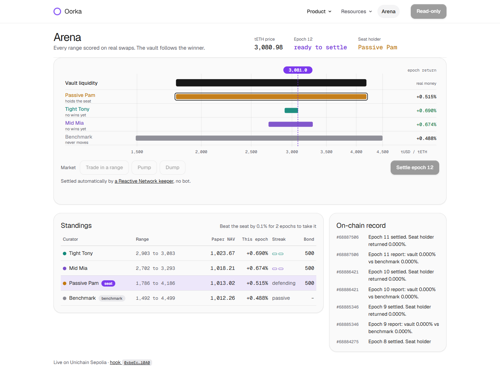

Oorka: the curator seat is earned, on-chain.
A Uniswap v4 hook where curators compete on real fees and the winner runs the vault. This report covers what was built, how it works, how it is defended, what is tested, and what is running live on testnet right now.
01Summary
Curated LP vaults ask depositors to trust a manager chosen by marketing or a self-reported backtest. Oorka replaces that trust with a continuous, on-chain competition. Any challenger can post a bond and declare a price range. The hook places a dust-sized probe position (1e9 liquidity) at that range, which makes the v4 PoolManager track feeGrowthInside there. Each curator is scored as a 1,000 tUSD paper portfolio built from that real fee growth plus real price exposure. A challenger who beats the seat holder for enough consecutive epochs takes the seat, and the vault's real liquidity migrates to their range in the same transaction. The loser's bond is slashed to depositors.
Settlement is permissionless and is driven by a Reactive Network CRON contract, so the competition runs with nobody watching. A passive benchmark range scores alongside every epoch and answers the depositor's question directly: is the contested seat beating doing nothing? The seat holder's 10% performance fee is paid only on growth above that benchmark and the high-water mark.
02Live status
Read from chain on 28 Nov 2026, about 00:40 UTC.

| Surface | Where | State |
|---|---|---|
| Web app | oorka.djyo.tech | live |
| Docs | oorkadocs.djyo.tech | live |
| OorkaPulse | 0xdbb33964d494e7cabfb90656d682f3b09f42ba9d | Reactive Lasna · event-driven |
| OorkaHook | 0xbeEcbe71d831880f2038Bc35b613e100F1f010A0 | Unichain Sepolia |
| OorkaKeeper | 0x53b31469cf03ae9f0042c7d6cbeed46750e22da5 | settling |
| OorkaReactive | 0x86c807a7a56c63472d52c46ebd2441d2067d7450 | Reactive Lasna · Cron1000 |
| PoolManager (v4) | 0x00b036b58a818b1bc34d502d3fe730db729e62ac | Unichain Sepolia |
| tETH / tUSD | 0x64A3C35b31f04e3c92a45E9d003468e4574810e6 / 0xaCB1732744aa55ff155E9BCA3F5B809b60C1Ac5C | MockERC20, mint from app |
| Swap router | 0xa93b93a962d8b00d409f084f2262c0a773b2e0dd | PoolSwapTest |
The pool trades tETH/tUSD near 3,000 with 0.3% fee and tick spacing 60. It is seeded with three curators (Passive Pam holds the seat, Tight Tony, Mid Mia), the benchmark and a vault deposit. Deploy block 68,873,661.
03Mechanism
The probe trick
v4 only maintains fee growth for initialised ticks. A curator who has no capital at a range would therefore have no measurable fee history. The hook adds PROBE_LIQUIDITY = 1e9 at every declared range, salted bytes32(id). That is dust in value, but it keeps the ticks initialised, so StateLibrary.getFeeGrowthInside returns the real per-liquidity fees that range earned on the pool's actual swaps. No oracle and no off-chain backtest are involved.
Paper NAV
fees = (feeGrowthInside_now − feeGrowthInside_last) · vL / 2^128 position = amounts(vL, range, blockOpenPrice) NAV = value(position + fees + cash, blockOpenPrice) // in tUSD
Virtual liquidity vL is set so the portfolio is worth exactly its NAV when the range is declared. A range change re-derives vL from current NAV minus switchCostBps.
Epochs, streaks and takeover
- At each epoch end anyone may call
settleEpoch(). Every paper portfolio is marked at the epoch's time-weighted settle price. - A challenger present for the whole epoch whose return beats the seat holder's by
marginBpsgains a win.winStreakwins in a row takes the seat. - On takeover: streaks reset, the old seat holder loses
slashBpsof bond to depositors, and the vault moves to the winner's range if the price is honest. Otherwise it emitsVaultMoveDeferredand the move completes on the next settle orcompound(). - Every settlement emits
BenchmarkScoredwith the vault's real return next to the benchmark's.
Testnet parameters
| Parameter | Value | Meaning |
|---|---|---|
| epochLength | 900 s | 15-minute epochs |
| winStreak | 2 | consecutive wins to take the seat |
| marginBps | 10 | must beat the seat holder by 0.1% |
| switchCostBps | 30 | charge per range change |
| slashBps | 2000 | 20% of the dethroned bond to depositors |
| maxTickDeviation | 300 | spot vs block-open guard for vault moves |
| minBond | 100 tUSD | entry bond |
| perfFeeBps | 1000 | 10% of growth above benchmark and high-water mark |
| MAX_CURATORS | 8 | plus one benchmark slot |
04Architecture
settleEpoch().Hook permissions: afterInitialize binds the hook to one pool, beforeSwap snapshots the block-open price and accumulates the TWAP, and beforeDonate rejects donations. The hook never changes swap pricing, so traders pay normal v4 fees.
| File | Lines | Role |
|---|---|---|
| contracts/src/OorkaHook.sol | 1,028 | hook, vault and curator registry in one contract (24,358 bytes runtime, under the 24,576 limit) |
| contracts/src/reactive/OorkaReactive.sol | 167 | CRON subscriber on Reactive, self-contained interfaces |
| contracts/src/reactive/OorkaKeeper.sol | 94 | callback receiver that settles epochs |
| contracts/test/*.t.sol | 3 suites | unit, fuzz, invariant, reactive |
| frontend/src | ~2,700 | React + viem app: landing, arena, vault, curate, swap, docs |
| frontend/scripts | 4 scripts | deploy-testnet, deploy-reactive, deploy-local, market |
05Contract surface
| Function | Caller | Effect |
|---|---|---|
| register(name, lower, upper, bond) | anyone | enter with a bond; first registrant takes the seat; reuses exited slots |
| declareRange(id, lower, upper) | curator | move your probe; the seat holder's move also moves the vault |
| settleEpoch() | anyone / keeper | score, streaks, takeover, slash, perf fee, benchmark report |
| deposit / withdraw | depositors | ERC20 shares at block-open price, deviation-guarded |
| exit(id) | challenger | leave and reclaim bond; the seat holder cannot exit |
| compound() | anyone | reinvest collected fees, finish a deferred vault move |
| registerBenchmark(name, lower, upper) | anyone, once | fixed passive reference; no bond, never competes |
| benchmarkReport() | view | vault vs benchmark, since start and this epoch |
06Security model
Each attack below has a defence in code and, where marked, a test that exercises it.
| Attack | Defence | Tested |
|---|---|---|
| Flash-push the price to inflate paper NAV | All accounting at the block-open price snapshotted in beforeSwap | yes |
| Push at end of block N, settle at start of N+1 | Settle at the epoch's time-weighted average of block-open ticks | yes |
| Sandwich deposits, withdrawals or rebalances | Vault-moving actions revert beyond maxTickDeviation | yes |
| Push, then trigger a takeover so the vault migrates into the sandwich | Seat changes, vault waits (VaultMoveDeferred) until price is honest | yes |
| Register/exit churn to make settle run out of gas | Exited slots reused; array bounded at 8 + benchmark | yes + invariant |
Inflate fee growth via donate() | beforeDonate reverts every donation | yes |
| Backdate a range after seeing the price | Ranges accrue only from declaration | by design |
| Flip ranges every block | switchCostBps on every change | by design |
| Join late with a lucky streak | Must be present the whole epoch | yes |
| Carry wins into a new reign | All streaks reset on takeover | yes |
| Fake keeper callbacks | Keeper accepts only the Reactive proxy and our reactive contract as sender | yes |
| Wash trading to inflate fees | Costs swap fee and impact; fees go to real liquidity. Not fully mitigated | known limit |
07Tests
Last CI run: 47 test functions passed, 0 failed (46 tests plus the invariant suite, which runs 5 invariants). Fuzz: 256 runs each. Invariants: 32 runs × depth 60, fail_on_revert = false.
OorkaHook.t.sol core mechanism10 / 10 pass
- Probe measures fees without capital
test_probeMeasuresFeesWithoutCapital - First registrant takes the seat and the vault follows
test_firstRegistrantIsIncumbentAndVaultFollows - Vault earns real fees
test_vaultEarnsRealFees - Challenger takes over after the streak
test_challengerTakesOverAfterStreak - Takeover resets every streak
test_takeoverResetsEveryStreak - Dethroned seat holder is slashed to depositors
test_dethronedIncumbentIsSlashedToDepositors - Trending market favours the wide range
test_trendingMarketFavorsWideRange - Out-of-range challenger never wins
test_outOfRangeChallengerNeverWins - Seat holder's rebalance moves the vault
test_incumbentRebalanceMovesVault - Challenger's range change doesn't touch the vault
test_challengerRangeChangeDoesNotTouchVault
OorkaHook.t.sol manipulation resistance7 / 7 pass
- Reference price ignores in-block manipulation
test_referencePriceIgnoresInBlockManipulation - Settle price ignores a push across the block boundary
test_settlePriceIgnoresAPushAcrossTheBlockBoundary - Settle price follows a sustained move
test_settlePriceFollowsASustainedMove - Donations are blocked
test_donationsAreBlocked - Takeover during a price push: seat changes, vault waits
test_takeoverWaitsOutAPricePush - Register/exit churn reuses slots
test_registerExitChurnReusesSlots - Cannot settle early
test_cannotSettleEarly
OorkaHook.t.sol benchmark and performance fee8 / 8 pass
- Seat holder is paid only for beating the benchmark
test_seatHolderIsPaidOnlyForBeatingTheBenchmark - No fee when the benchmark wins
test_noFeeWhenTheBenchmarkWins - No fee without a benchmark on a flat epoch
test_noFeeWithoutABenchmarkOnFlatEpoch - Benchmark starts flat and is immovable
test_benchmarkStartsFlatAndIsImmovable - Only one benchmark
test_onlyOneBenchmark - Benchmark never takes the seat
test_benchmarkNeverTakesTheSeat - Benchmark report tracks vault and benchmark
test_benchmarkReportTracksVaultAndBenchmark - Benchmark doesn't use a curator slot
test_benchmarkDoesNotUseACuratorSlot
OorkaHook.t.sol vault, access control, fuzz8 / 8 pass
- Deposit/withdraw round trip
test_depositWithdrawRoundTrip - Exit returns the bond
test_exitReturnsBond - Seat holder cannot exit
test_incumbentCannotExit - Only the owner declares their range
test_onlyOwnerDeclares - Bond too small reverts
test_bondTooSmall - Bad range reverts
test_badRangeReverts - Fuzz: deposit then withdraw never creates value (256 runs)
testFuzz_depositWithdrawNeverCreatesValue - Fuzz: range rules hold for any tick pair (256 runs)
testFuzz_rangeRulesHold
OorkaInvariant.t.sol stateful fuzzing5 / 5 hold
- Solvent: token balances cover idle vault funds plus every bond
invariant_solvent - Vault's booked liquidity equals the PoolManager's position
invariant_vaultLiquidityMatchesPoolManager - Curator array never exceeds MAX_CURATORS + 1
invariant_curatorArrayBounded - Exactly one live seat holder, never the benchmark
invariant_seatHolderIsALiveCurator - Every active probe holds exactly 1e9 at its declared range
invariant_probesTrackDeclaredRanges
The handler drives 8 actions across 4 actors with bounded inputs: trades (weighted twice), block/time advance, deposit, withdraw, register, declare range, exit, and settle. A reverting call is skipped as a failed transaction would be. The suite starts with a seat holder, benchmark and vault deposit so every path is reachable.
OorkaReactive.t.sol Reactive keeper13 / 13 pass
- Poke is a no-op mid-epoch
test_pokeIsANoOpMidEpoch - Poke settles an ended epoch
test_pokeSettlesAnEndedEpoch - A full takeover happens with no human settling; settle uses under 1.5M of the 3M callback gas
test_takeoverHappensWithNoHumanSettling - Only the callback proxy may call
test_onlyCallbackProxy - Only our own reactive contract as sender
test_onlyOurReactiveContract - Keeper pays only the proxy
test_keeperPaysOnlyTheProxy - Reactive subscribes to CRON on deploy
test_reactiveSubscribesToCronOnDeploy - Requests a callback every N ticks with the right chain, recipient, gas and payload
test_reactiveRequestsCallbackEveryNTicks - react() only from the system contract
test_reactOnlyFromSystem - Waits until the keeper is set
test_reactiveWaitsForKeeper - Pays only the system contract
test_reactivePaysTheSystemContract - Pause unsubscribes; resume covers debt then resubscribes
test_pauseUnsubscribesAndResumeCoversDebt - Ignores other topics
test_reactiveIgnoresOtherTopics
Run them with cd contracts && forge test. The reactive tests etch a mock system contract at 0x8888…8888 to stand in for Reactive's VM.
08Reactive keeper in production
- Model: Reactive's current contract model. The system contract calls
react()directly; callbacks go throughrequestCallbackV_1_0with a 3,000,000 gas limit and payloadpoke(address(0)). The network injects the reactive contract's address as the first argument, which the keeper checks. - Schedule: Cron1000 (topic
0xe20b…e3f4), about every 17 minutes. Epochs are 15 minutes, so every ended epoch settles within one tick. - Cost: about 0.013 lREACT per tick, billed whether or not anything settles. Funded with 4.6 lREACT; 4.43 remain after the first night.
- Funding path used: 0.05 Sepolia ETH from the Google Cloud faucet, sent to Reactive's Sepolia faucet contract at 1 ETH = 100 lREACT.
- Failure handling: a failed settle emits
SettleFailedand retries next tick. Debt blocks delivery, sosetPaused(false)covers debt before resubscribing. - History: the first keeper used the old reactive-lib
vmOnlyguard and reverted with "VM only" after Reactive changed models. It was ported, redeployed, and the old contract paused.
depositTo(reactive) on the system contract, or claim more Sepolia ETH and use the faucet bridge. The steps are in OORKA_HOOKATHON_PLAN.md.09Demo market
A scheduled GitHub Action (.github/workflows/market.yml) runs frontend/scripts/market.mjs with a throwaway testnet key stored as the TRADER_KEY secret. Each run mints and approves test tokens if needed, swaps the price toward a deterministic target with a price limit, then adds 2 to 4 round trips for fee volume.
target(t) = 3000 · exp( 0.035 · sin(2πt / 8h) + 0.012 · sin(2πt / 77min) )
Near the middle of the slow wave the tight range collects the most fees; at the swings the price leaves it and the wide ranges catch up. That alternation produces real streaks and takeovers. The market never settles; that stays with the keeper.
*/15 schedule (top-of-hour cron slots are often dropped), so the pool saw no trades overnight and the settled epochs read 0.000%. The schedule moved to minutes 7, 22, 37 and 52, a run was triggered by hand, and the next scheduled runs should be checked in the Actions tab.10Frontend
- Stack: React, Vite, viem. Two modes: local (dev keys, time controls) and wallet (Unichain Sepolia).
- Landing: dithered hero, three-step explainer, bento of features, numbers, comparison table, explore links.
- Arena: one compact card with live lanes (vault, curators, benchmark around the price), market buttons (Trade in a range, Pump, Dump), settle button, standings with sparklines and streak pips, and the on-chain record.
- Vault and Curate: deposit/withdraw with vault-vs-benchmark figures; register, declare range and exit.
- Swap and Docs: a swap page against the hooked pool and an in-app docs page with figures.
- History: first load reads past events from the Blockscout logs API in one request, then follows new blocks over RPC in small chunks.
- Hosting: GitHub Pages, deployed by the Pages workflow on every push to main.
11CI and tooling
| Workflow | Trigger | Does |
|---|---|---|
| ci.yml | push, PR | forge build with sizes, forge test (unit, fuzz, invariant), uploads contracts-out artifacts used by the Node deploy scripts |
| pages.yml | push to main | builds the frontend in unichain mode and publishes to GitHub Pages |
| market.yml | cron :07/:22/:37/:52, manual | demo trader against the live pool |
Foundry is blocked on the development machine, so all compilation and testing runs in CI and deployments use viem scripts fed by CI's artifacts. A Hardhat devnet (local-chain/) gives a Node-only local demo, and demo.sh gives the one-command anvil demo where Foundry is available.
12Build history
- Early NovHook core: probes, paper NAVs, streaks, takeover, vault with ERC20 shares, local demo.
- Mid NovManipulation defences: block-open pricing, TWAP settle price, donation block, deviation guard. Benchmark and benchmark-relative performance fee.
- Mid NovFrontend: landing page, arena lanes, standings, vault, curate, swap, docs; GitHub Pages.
- 22 NovReactive keeper ported to the current Reactive model after "VM only" reverts; redeployed on Lasna and Unichain Sepolia.
- 26 NovHardening: bounded curator array via slot reuse, deferred vault move on pushed prices. Fuzz and invariant suites added. Hook redeployed with 15-minute epochs; keeper funded with lREACT; demo market Action; app pages compacted; Blockscout history.
- 26 Nov 21:20ZFirst automatic settlement by the new keeper (epoch 0).
- 27 Nov12 epochs settled unattended. README rebuilt around the landing page. Market schedule fixed. Arena standings layout fixed.
13Limitations and next steps
- Wash trading can inflate a range's fee growth at the cost of swap fees and impact. A production version would cap per-epoch fee credit or weight fees by unique swappers.
- Unmatched side on migration stays idle in the vault rather than being swapped into the new range.
- One vault per pool. Several vaults with different mandates could read the same leaderboard.
- Contract size sits 218 bytes under the limit, so new hook features will need a library split.
- Testnet operations depend on lREACT top-ups and on GitHub's cron reliability for the demo market.
14Before submission
- Progress Update 2 (copy drafted in
OORKA_HOOKATHON_PLAN.md)due 30 Nov - Confirm the demo market is firing on its new schedule27 Nov
- Demo video (~3 min, script in the plan file)by 3 Dec
- Thumbnailby 3 Dec
- Final submission form3 Dec
- Top up the reactive contract's lREACT to last through judgingby 1 Dec